Conceptos
GIT es un sistema de control de versiones creado por Linux Torvalds en el año 2005. Un sistema de control de versiones es un programa que nos permite almacenar tolos los cambios que hagamos a uno o varios archivos, de esta forma podemos tener un registro de todas las modificaciones que sufran estos archivos y así en caso de algún error poder regresar a una versión anterior.
Instalando git
Para instalar git lo primero que debemos hacer es ir a la página oficial, a la cual dejamos un enlace en el apartado de descargas que encontraran en el inicio y descargar el instalador según su sistema operativo, en nuestro caso descargaremos la versión para Windows, pero también puedes descargar git para Mac OS X, Linux y Solaris.
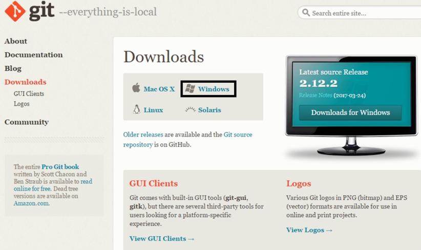
Una vez descargado ejecutamos el instalador, este nos pedirá permisos de administrador, se los concedemos y nos aparecerán las siguientes dos ventanas a las cuales damos en siguiente.
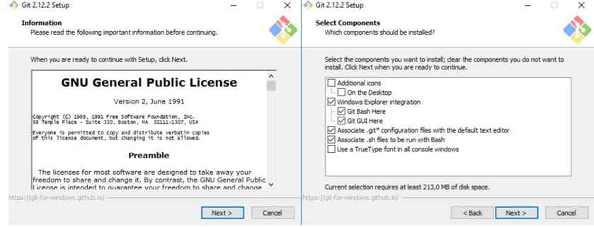A continuación nos preguntara con que línea de comandos queremos manejar git, podemos elegir GIT bash, el CMD de Windows y GIT bash con algunas características de CMD de Windows. En nuestro caso dejaremos el que viene por defecto y pulsamos siguiente enseguida nos preguntara porque librerías de certificados de seguridad queremos usar, dándonos dos opciones las OpenSSL y las nativas de Windows, seleccionamos la que deseemos usar y damos a siguiente.
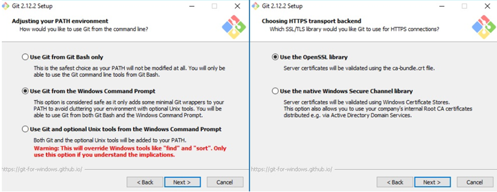A continuación nos enseñara dos pantallas más de personalización de la línea de comandos, como en lugar de la línea de comandos vamos a usar la interfaz de usuario de GITHUB dejaremos los valores por defecto.
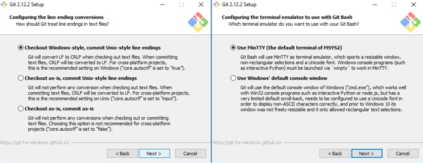Finalmente nos aparece la opción install, damos clic en esta y esperamos a que termine de instalar GIT en nuestro equipo Una vez terminada la instalación nos dará la opción de ejecutar GIT bash y de ver las notas de la versión, damos clic en finalizar y habremos terminado.
GitHub
GITHUB es una plataforma de desarrollo colaborativo de software para alojar proyectos usando el sistema de control de versiones Git. Github nos permite alojar nuestro repositorio de código y nos brinda herramientas útiles para el trabajo colaborativo.
Para empezar a trabajar nuestros proyectos colaborativos lo primero que debemos hacer es crear una cuenta en github.com, una vez creada la cuenta en github se deberá crear el repositorio dando clic en la opción donde dice nuevo repositorio
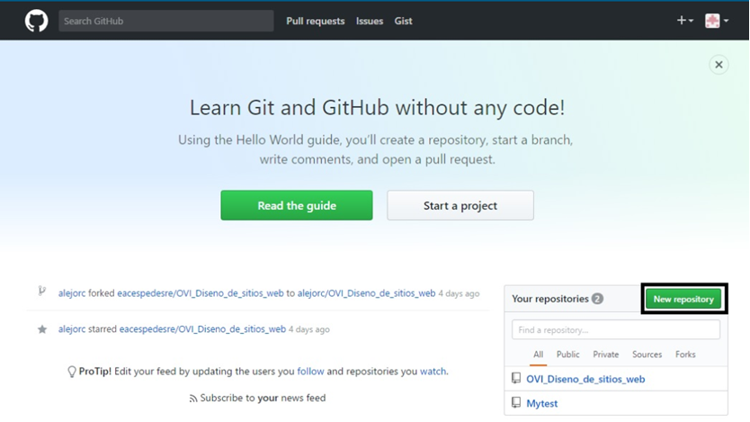
Luego deberemos asignar un nombre a nuestro repositorio, este nombre no puede contener espacios ya que este es el mismo que tendrá nuestra página si la publicamos en github pages, también tenemos un espacio para colocar una breve descripción del contenido de nuestro repositorio. También se puede indicar si el repositorio será público o no, por el cual solo sera accesible para el usuario que lo crea y los contribuidores que este asigne, pero debemos tener en cuenta que para poder crear un repositorio privado tendremos que actualizar nuestra cuenta por 7 dólares al mes.
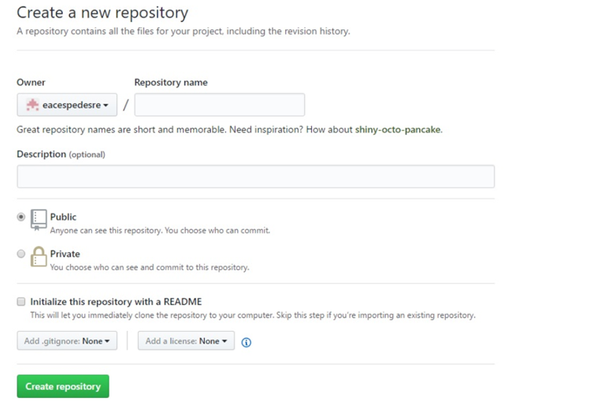
INSTALACION DEL CLIENTE GITHUB PARA ESCRITORIO
Para instalar github lo primero que debemos hacer es descargar su instalador de la página oficial, a la cual hemos dejado un link en la sección de descargas de la página inicio, allí tendremos la opción de descargar el instalador tanto para Windows como para Mac OS X, en nuestro caso seleccionamos la opción para Windows y damos al botón descargar.z
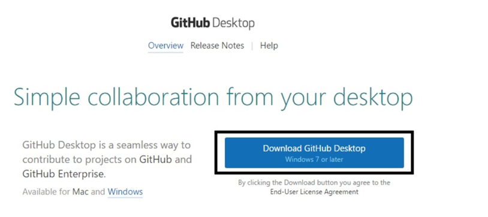Al terminar la descarga ejecutamos el instalador, si no tenemos instalado Net Framework 4.5 nos aparecerá una ventana para instalarlo de lo contrario nos aparecerá la ventana de instalación de github, pulsamos en installar esperamos a que descargue e instale y ya tendremos instalado github en nuestro ordenador.
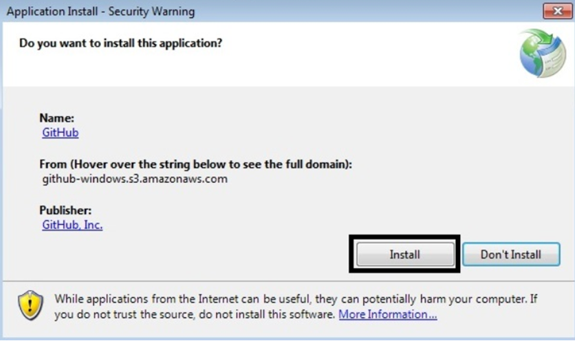GITHUB PAGES
Es una forma de alojar nuestros proyectos en una página web, sin necesidad de tener conocimientos en servidores, de hecho es algo muy sencillo y que no tomara más de 5 minutos en configurar.
Lo primero que debemos tener en cuenta a la hora de publicar nuestro proyecto en github pages es que nuestro repositorio deberá tener en el directorio raíz una página llamada "index.html". Si nuestro repositorio ya cuenta con el archivo inex.html lo único que tendremos que hacer es ir a nuestro repositorio y pulsar en settings
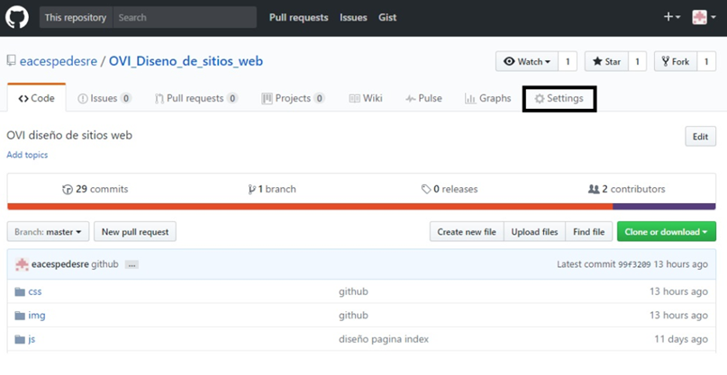Aquí podremos renombrar nuestro repositorio, debemos tener en cuenta que el nombre de nuestro repositorio es el que tendrá nuestra página, Nos desplazamos hacia abajo hasta encontrar el apartado Github pages, este por defecto esta desactivado (none), seleccionamos master branch y guardamos los cambios (save).
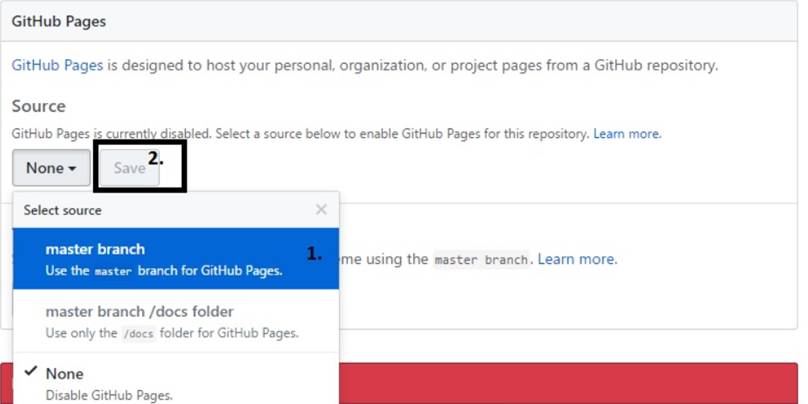Así ya tendremos publicada nuestra página en github pages, y en este mismo apartado github nos proporcionara el link para poder acceder a nuestro sitio web.
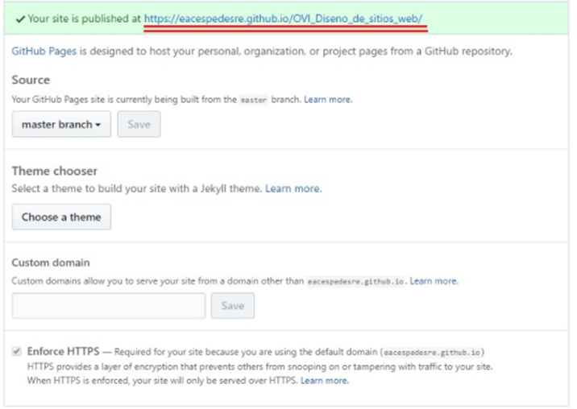HTML5
HTML 5, es la última versión de html, pero realmente contiene nuevos elementos, atributos y comportamientos. Contiene un conjunto más amplio de tecnologías que permite a los sitios web y a las aplicaciones ser más diversas y de gran alcance.
Permite describir con mayor precisión en su contenido, también permite comunicarse con el servidor de formas nuevas e innovadoras, y lo mejor es que permite a las páginas web almacenar datos localmente en el lado del cliente y operar sin conexión de manera más eficiente. Realmente otorga una mayor optimización de la velocidad y un mejor uso del hardware.
Estructura básica de html5
Para empezar una página en html5 lo primero de debemos realizar es definir el DOCTYPE y posteriormente asignar el idioma en el que va a estar nuestra página, esto lo conseguimos con la etiqueta html y el atributo lang.
Estructura básica de html5
Para empezar una página en html5 lo primero de debemos realizar es definir el DOCTYPE y posteriormente asignar el idioma en el que va a estar nuestra página, esto lo conseguimos con la etiqueta html y el atributo lang.
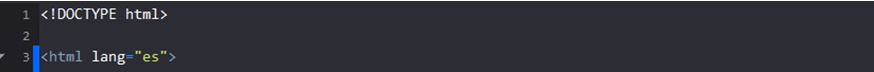De esta forma indicaremos que nuestra página está escrita en html5 y que el idioma de su contenido es español.
Luego va la etiqueta HEAD, en esta agregaremos la etiqueta meta para designar el codificado de nuestra página, la cual pondremos UTF-8 esto con el fin de que nos acepte la "Ñ" y otros acentos del español.
Dentro del head también va la etiqueta tittle, esta designa el título que saldrá en la pestaña superior del navegador y la etiqueta link, mediante la cual asociamos nuestros estilos creados en css a nuestro documento html5.
Con esto ya terminaríamos la parte no visible de nuestro sitio, lo siguiente es definir la etiqueta BODY, dentro de esta lo primero es el HEADER, esta define la cabecera de nuestra página, por lo general aquí tenemos el logo y nombre de nuestro sitio o en su defecto un banner.
Dentro del header podremos colocar cualquier etiquetas h, p, figure, etc. Pero lo más recomendable es usar solo la etiqueta h.
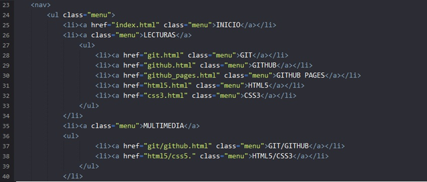A continuación del header tenemos la etiqueta nav; la cual identifica la barra de navegación de nuestro sitio web, esta contiene por lo general las etiquetas ul, lo y li para crear listas y así obtener menús desplegables.
Luego tendríamos la etiqueta section, dentro de esta podremos definir etiquetas h, p, figure. Aunque lo ideal es definir dentro de nuestra etiqueta section una etiqueta article o artículo y entro de esta empezar a trabajar todo nuestro contenido.
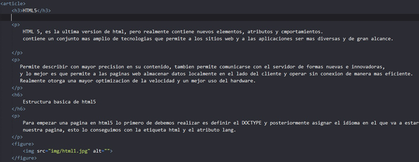Por ultimo tendríamos las etiquetas ASIDE y FOOTER, con aside crearemos una barra lateral y con el footer podremos crear el pie de página de nuestro sitio web.
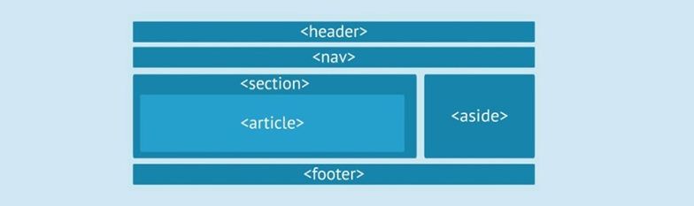CSS3
CSS, siglas en inglés para Hoja de estilos en cascada es un lenguaje utilizado, para especificar el aspecto de una página web para diferentes dispositivos. Realmente, el HTML le dice al navegador la estructura de un documento, mientras que el CSS le dice como rende rizarlo.
CSS3 añade muchas capacidades nuevas a la especificación anterior. Aunque aun está en proceso de estandarizado. Los procesos que otorga CSS3 son excelentes bordes, fondos, color, textos, transformaciones, transiciones, cajas, contenido, opacidad. Son elementos esenciales para el diseño y su estructura para cualquier web.
El nombre de hojas de estilo en cascada se debe a que los estilos aplicados se heredan de forma Jerárquica, es decir que si aplicamos un font-size: 10px; a la etiqueta body, todos los elementos de texto de nuestra página tendrán este tamaño de letra a menos que les especifiquemos otro tamaño.
1. Maquetación básica
Width: Especifica el ancho que debe tener un elemento.
Height: Especifica el alto que debe tener un elemento.
Margin: Especifica el espacio de separación que toma el elemento respecto a los demás. Se puede especificar por separado arriba, abajo, izquierda y derecha.
Padding: Especifica un margen interno del objeto el cual aumenta su tamaño, este se puede especificar por separado arriba, abajo, izquierda y derecha.
2. Texto y fuentes
Font-family: Permite especificar el tipo de letra a usar.
Font-size: Permite especificar el tamaño de la letra
Font-style: Permite elegir el estilo de letra (normal, cursiva, etc.)
text-decoration: Permite dar decoración al texto como subrayado, tachado, línea superior, etc.
Text-align: Permite centrar, justificar, alinear a la izquierda y derecha el texto
3. Color y fondo
Color: Permite dar un color al elemento, este color se puede indicar mediante palabras preestablecidas como red, blue, etc., mediante combinación rgb como también por medio de valores de color hexadecimales.
Backgroud-color: Permite definir el color de fondo que tenga un objeto, al igual que color puede ser una palabra, una combinación rgb o un valor hexadecimal
Backgroud-image: Permite definir una imagen como fondo del elemento
Background-repeat: Permite determinar cómo se adapta la imagen de fondo con respecto al tamaño del elemento
box-shadow: Permite dar una sombra al elemento, esta sombra puede ser interna y externa.
4. Listas
List-style-image: Permite elegir una imagen como viñeta a una lista
List-style-type: Permite elegir el tipo de viñeta que usara una lista (círculo, cuadrado, etc.
5. Bordes
border: Añade un borde al elemento
border-color: Permite definir el color del borde
border-style: Permite definir el estilo del borde (solido, punteado, etc.
border-radius: Permite redondear las esquinas de un elemento